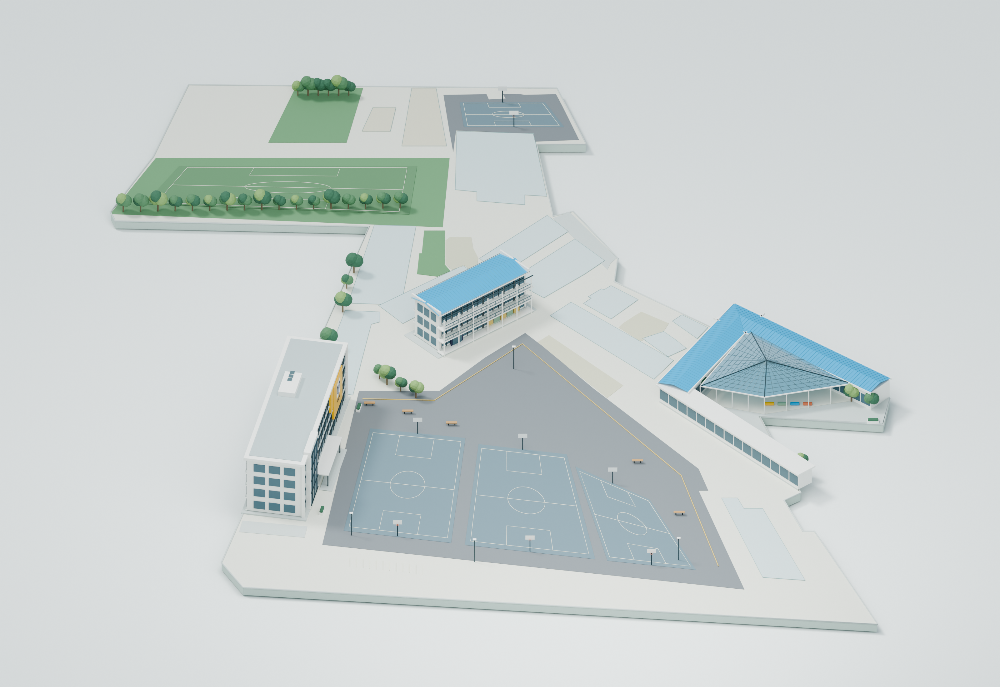
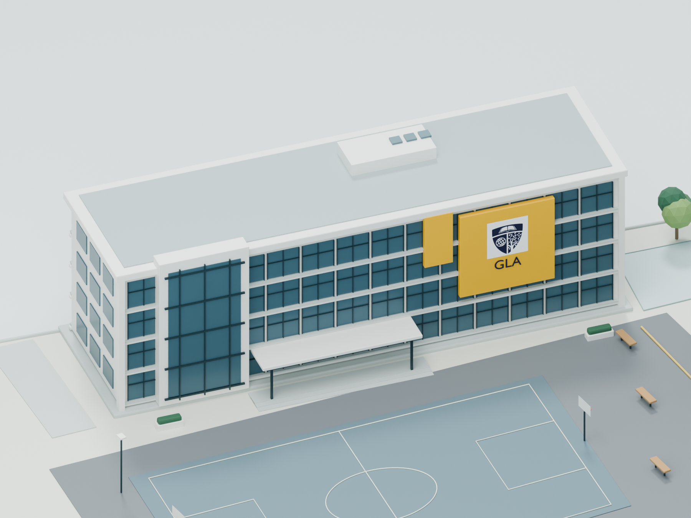
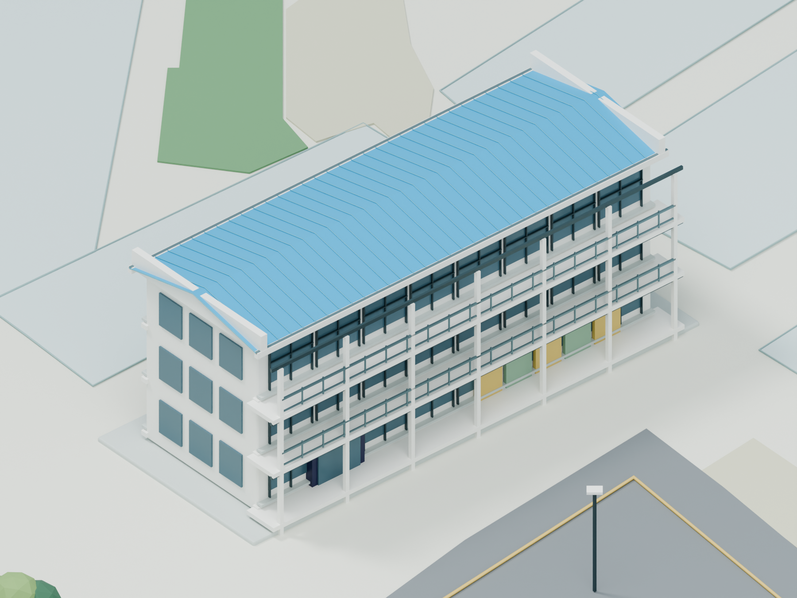
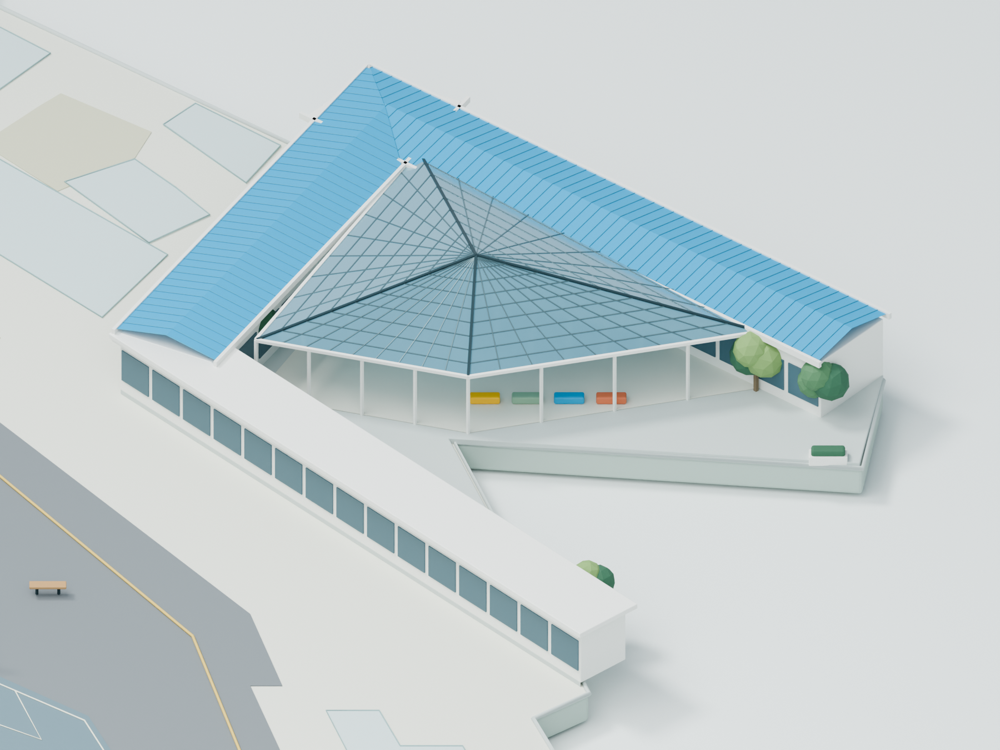
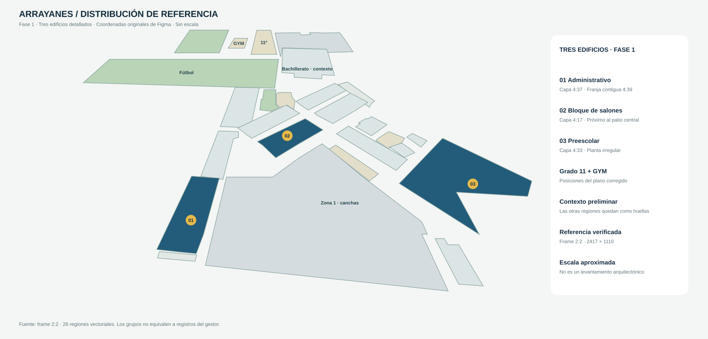

El colegio, en una
primera maqueta.
Una distribución aproximada y tres edificios con identidad propia. Una primera escena para revisar arquitectura, proporciones y dirección visual.

Administrativo
Fachada blanca, vidrio y el amarillo institucional.

Bloque de salones
Ritmo de ventanas, corredores abiertos y cubierta azul.

Preescolar
Planta irregular, alas azules y estructura acristalada.

La distribución de referencia
Frame 2:2 verificado · Grado 11 y GYM en su ubicación corregida.

Qué revisar en esta fase
El parecido de los edificios, las relaciones entre espacios, la escala visual y la estética de la maqueta. Las zonas sin volumen permanecen como contexto preliminar; las medidas todavía son aproximadas.
Escena editable y reproducible
Modelos, materiales, iluminación y cámaras se generan con Python en Blender. La revisión es local y no incorpora datos ni funciones del aplicativo.